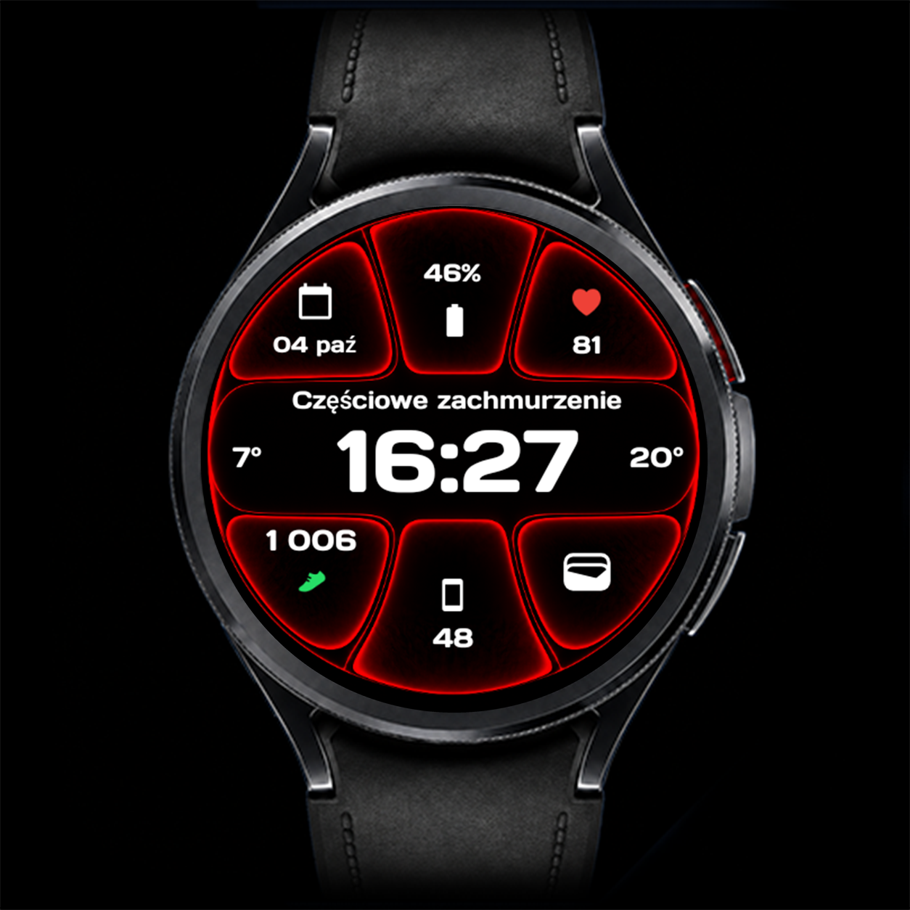

Clear Vision · Wear OS
CV07 Glow
Efekt glow. Czytelność Clear Vision.
CV07 Glow to bardziej efektowna odsłona Clear Vision: duża cyfrowa godzina, świetliste kontury i krótka animacja po wybudzeniu zegarka. Sześć edytowalnych komplikacji oraz opcje upraszczania wyglądu pozwalają dopasować tarczę do własnych potrzeb.

Najważniejsze funkcje
- 6 edytowalnych komplikacji
- Animacja po wybudzeniu z możliwością wyłączenia
- Efekt poświaty i zmiana kolorów wybranych elementów
- Możliwość wyłączenia głównej grafiki
- Temperatura min./max. z opcją ukrycia
- Duża godzina i osobny tryb AOD
Galeria
Galeria — 8 zdjęć
Dotknij zdjęcia, aby je powiększyć.
Animacja i poświata
Po wybudzeniu zegarka CV07 może odtworzyć krótką animację z efektem glow. Jeśli wolisz spokojniejszą prezentację, wyłącz animację w personalizacji. Statyczne zdjęcia w galerii pokazują wygląd tarczy; nie odtwarzają ruchu animacji.
Sześć edytowalnych komplikacji
Trzy pola nad godziną i trzy pod nią możesz dopasować do siebie. Wybieraj zgodne dane lub skróty, np. baterię, kroki, pogodę, kalendarz, tętno, aktywność czy alarmy. Dostępność zależy od zegarka, Wear OS, aplikacji i typu danego pola.
Od efektownego do minimalistycznego
Możesz zmieniać kolory wybranych elementów i całkowicie wyłączyć główną grafikę. Odczyty temperatury minimalnej i maksymalnej po bokach godziny także można ukryć. Każda z tych opcji pomaga wybrać ilość informacji i oprawę, która Ci odpowiada.
Always-On Display
Po przejściu zegarka w tryb Always-On Display tarcza pokazuje uproszczony widok z czytelną godziną. AOD musi być włączony w ustawieniach zegarka; jego dostępność i zachowanie zależą także od urządzenia i ustawień systemowych.
Jak dostosować tarczę
- Ustaw CV07 Glow jako aktywną tarczę zegarka.
- Przytrzymaj tarczę i wybierz Dostosuj / Customize.
- Wybierz dane dla sześciu komplikacji i dopasuj kolory. Ustaw według własnych preferencji animację, główną grafikę i widoczność temperatury min./max.
- Zatwierdź wybór, wróć do tarczy i sprawdź wyświetlane dane.
Nazwy opcji mogą różnić się zależnie od zegarka i wersji Wear OS.
Instalacja i konfiguracja →Dodatkowe dane: Phone Battery Complication
Sama tarcza działa bez Phone Battery Complication. Ta zewnętrzna aplikacja od amoledwatchfaces jest niezbędna do wybranych dodatkowych źródeł danych, np. baterii telefonu. Zainstaluj i skonfiguruj ją na telefonie z Androidem oraz zegarku Wear OS. Dostępne pozycje zależą od zgodności źródła danych z wybranym polem.
Zgodność i działanie komplikacji
Tarcza jest przeznaczona dla zgodnych zegarków Wear OS. Przed instalacją sprawdź zgodność swojego urządzenia w Google Play. Dostępność, wygląd, długość tekstu i odświeżanie komplikacji zależą od zegarka, wersji Wear OS i dostawcy danych. Nie każda komplikacja działa w każdym polu. Jeśli pole pozostaje puste, sprawdź uprawnienia wybranej aplikacji lub wybierz inne zgodne źródło.
Pytania o CV07 Glow
Czy wszystkie sześć pól można edytować?
Tak. CV07 Glow oferuje 6 edytowalnych komplikacji — trzy nad godziną i trzy pod nią.
Czy mogę wyłączyć animację i główną grafikę?
Tak. Obie opcje są dostępne w personalizacji tarczy.
Czy mogę ukryć temperaturę minimalną i maksymalną?
Tak. Możesz wyłączyć oba odczyty.
Czy mogę wyświetlić baterię telefonu?
Tak, w zgodnym polu, po zainstalowaniu i skonfigurowaniu Phone Battery Complication na telefonie oraz zegarku.
Czy CV07 ma AOD?
Tak. CV07 Glow ma osobny tryb Always-On Display.